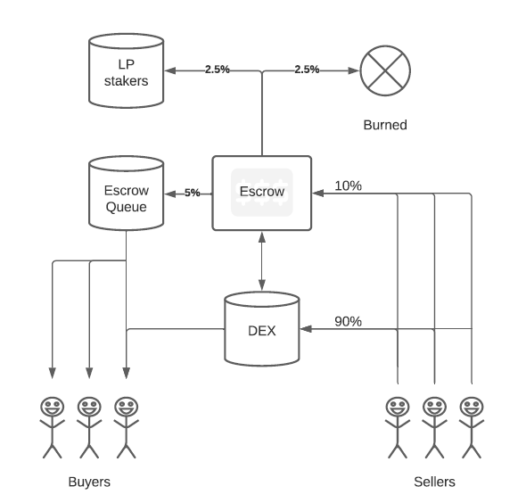

What differs ESCRW from other tokens burning their supply is that ESCRW wont leave the holders with less tokens due to the burning, all ESCRW holders will maintain their amount of tokens while benefiting from the same financial gains and tokenomics of a burning supply. This is achieved by putting tokens in escrow.
Instead of burning a large amount of tokens from the holders, the contract puts a percentage of newly transferred tokens into escrow. The escrow is on a rolling schedule, when new tokens get in to the escrow, the old tokens get released, first in first out. So the buyer will always get the full share, nobody looses any wealth to the burn function. But the token gains its minimum price by the amount being in escrow at the current time. The price increases when the tokens are burnt, but nobody is loosing any tokens. This insures that liquidity providers get rewarded and investors who get in close to the minimum price has there investment guaranteed.
The escrow is completely automated and handled securely within the contract. The tokens are locked and cannot be manually withdrawn in any way, they can only be released by the contract itself. Whenever someone transfers token, 10% of the tokens will be added to the escrow. The escrow is on a rolling schedule and these 10% will be released as soon as a new transfer are completed. Whenever an amount enters the escrow, 50% of this amount is being released to the previous addresses that entered the escrow, 25% is being shared equally among the lp stakers and 25% is being permanently burned. This will continue indefinitely.
This causes an increasing minimum price. Due to the increasing minimum price, investors buying at the minimum price has a guaranteed profit, it also sets a dump limit how far the token can drop. If you purchase the token at the minimum price, it is impossible for your tokens to lower in value. This is achieved by slowly and steadily burning small amounts of tokens while keeping track of who owned these tokens and repaying them with every transaction going forward. Even though tokens are burnt, the owners of these tokens will get reimbursed. When an amount is entering the escrow, half of that amount is released in a first in first out manner. In time everyone will get there tokens and the minimum price will increase.
With a growing amount in escrow, but wealth locked in the token the value of the liquidity pool constantly grows. Whenever an amount is entered the escrow, the value of those tokens will be split equally between the liquidity providers. By providing liquidity at the minimum price, it will not be possible to lose value.
50% private/LGE sales (50,000 ESCRW)
30% public sales (30,000 ESCRW)
10% marketing (10,000 ESCRW)
10% dev fund (10,000 ESCRW)
To access the LGE/presale you have to enter a correct key, without this key your will not be allowed to buy tokens.
asdasdasdasdasdasd
Are you interested in working with us? We are currently looking for marketers and front-end developers.
Marketing
Do you wanna work with marketing and feel this is the project for you? Earn direct income after every successfull sale, directly deposited in to your own wallet. When requesting your own LGE presale key, your address gets connected to your personal key whenever a sale is made with this key, 10% of the commission is deposited directly in to your address, no middle man, everything is handled through the smart contract.
Request your own LGE presale key in the form bellow and earn a 10% commision on all sales generated. This is completely free but since it requires to connect your address with your key on-chain your standard ETH gas fees will be applied!
Front-end developer
Are you an experienced front-end developer? capabel of both coding and design? Then this job might be for you. We are looking for help making the website a bit more interesting, web3 skills are not required but would be appreciated. If you believe this is of any interest, please send us an email or contact us directly through out telegram group